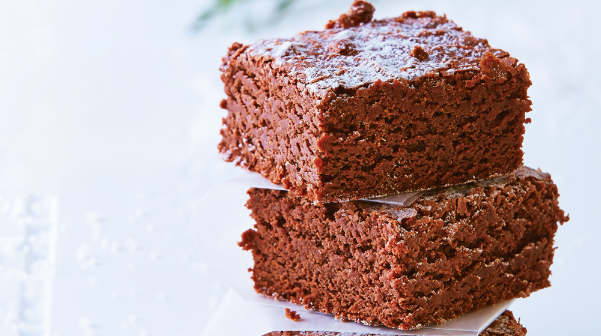
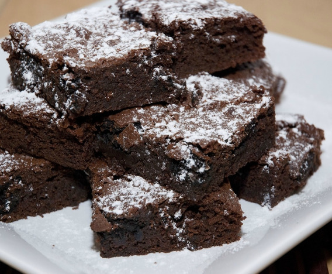

Brownies
Ingredientes
1 Barra Mantequilla fundida (90 g)
1 Bolsa Leche Condensada LA LECHERA® (90 g)
1 Pieza Huevo
3/4 Taza Alimento en Polvo para Preparar Bebida Sabor a Chocolate MORELIA PRESIDENCIAL®
2/3 Taza Harina de trigo
1/2 Cucharadita Polvo para hornear
1 Cucharada Azúcar glass para decorar
Elaboracion
Horno precalentado a 180 °C. Mezcla la mantequilla con la Leche Condensada LA LECHERA®, el huevo hasta que se integren; añade el Polvo para Preparar Bebida Sabor a Chocolate MORELIA PRESIDENCIAL® con la harina y el polvo para hornear, previamente pasados por un colador; continúa mezclando hasta integrar. Vierte en un molde previamente engrasado y enharinado.
Hornea a 180 °C de 25 a 30 minutos y deja enfriar.
Desmolda y corta en cuadros; decora con azúcar glass.
 